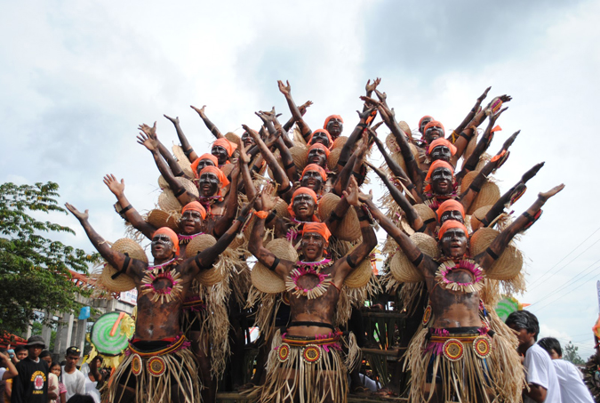

Langub Festival
January 24 — Fiesta sa Sto. Niño
The Langub Festival is Mabinay’s signature celebration honoring Sto. Niño. "Langub" means cave — a tribute to the town's title as the Cave Capital of the Philippines.
Highlights
- Vibrant street dancing and grand parade
- Elaborate costumes inspired by stalactites, stalagmites, and underground life
- Religious novena and procession for Sto. Niño
- Local food stalls, cultural shows, and community fairs
Why visit?
Experience the fusion of faith, culture, and nature — a lively showcase of Mabinay’s identity, creativity, and community spirit. The Langub Festival is perfect for visitors who love colorful performances, local traditions, and eco-tourism.